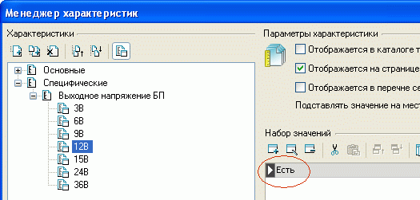
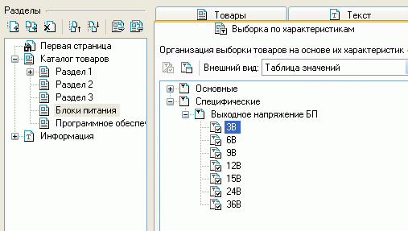
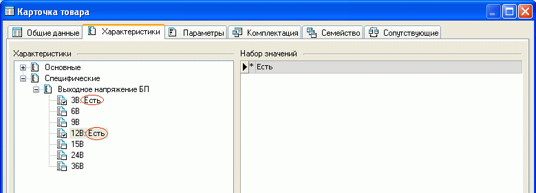
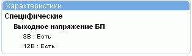
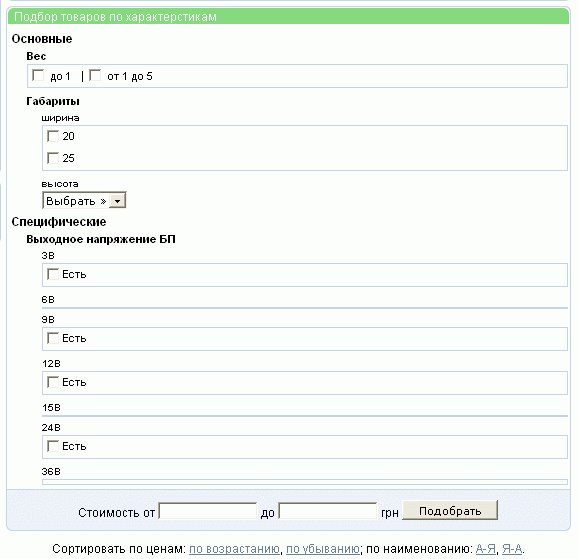

Вопрос: Есть список наименований файлов-изображений и строки с информацией о товаре в Excel, которые им как-то соответствуют. Как произвести импорт изображений?
Ответ: Когда производится импорт данных, то для колонки с именами файлов с изображениями следует указать "Импортировать содержимое колонки - как изображение". При необходимости можно указать адресную приставку, чтобы получить полный путь к файлу на диске, например C:/Images/foto1.jpg. Импортировать можно только картинки формата jpg. Для быстрой групповой конвертации изображений из gif в jpg можно использовать программу типа ACDSee. После импорта следует выполнить переформатирование изображений.
Вопрос: Возможна ли мультиязычность?
Ответ: Просто надо создать еще один магазин языка "Х", а используемые функции импорта и экспорта в формате MS5 помогут перенести данные, ибо:
Вопрос: Можно ли сделать так, чтобы покупатель в обязательном порядке выбирал все назначенные товару параметры?
Ответ: Для этого в менеджере параметров необходимо определить физическую суть параметра как "Базовый", а не "Модификация стоимости"
Вопрос: Можно ли сделать подарок не в зависимости
от суммы покупки, а к какому-то определенному товару?
Ответ: Назначение подарков происходит автоматически
в зависимости от суммы, в этом их ключевой смысл. Подарок же к какому-то определенному
товару можно рассматривать как скидку при покупке двух товаров, причем величина
скидки равна стоимости одного из товаров (подарка). Для этого надо создать товар
с именем "два товара по цене одного",назначить ему суммарную стоимость
и установить распродажу по цене основного товара.
Ну а в описании товара можно красным или иным цветом уже разрекламировать данный товар. Также можно воспользоваться рекламной группой, сделав рекламные пояснения к товару.
Вопрос: В настоящее время доступна сортировка товара по цене и алфавиту. Возможно ли сделать сортировку по одной из характеристик?
Ответ: Решить поставленную задачу можно более удобным методом, чем сортировка по характеристикам. Используя фильтр, можно организовать выборку по характеристикам сразу во всех разделах, где есть товары, имеющие заданную характеристику.
Это более удобный вариант, так как если при большом количестве товаров сделать сортировку по характеристике, то придется пролистать и внимательно просмотреть n-число страниц, пока будет найдена страница, на которой находятся товары с нужной величиной характеристики. Фильтр позволит сразу вывести товары с требуемой величиной характеристики.
Вопрос: как не допустить обилия значений характеристик при большом количестве товаров
Ответ: Следует создать скрытую характеристику, значениями которой будут диапазоны значений характеристики, а в расширенном описании товара указать уже конкретное значение для такой характеристики. Тогда можно организовать выборку по диапазону, а затем выбрать товар, имеющий значение характеристики, более точно удовлетворяющее критериям поиска.
Вопрос: Если опция "Продавать товары с учётом их количества на складе" в общих настройках магазина не установлена, а количество на карточке товара равно нулю, сможет ли покупатель купить товар?
Ответ: Если опция "Пpoдaвaть тoвapы c учeтoм иx кoличecтвa нa cклaдe" не выбрана, то поле "Количество" является предельной величиной количества для каждого покупателя на заданный товар и, естественно, при количестве, равном нулю, покупатель не сможет купить товар. (см."Количественный учет товара").
Вопрос: Товар состоит из нескольких комплектующих, которые, как правило, продаются только вместе, но изредка, например, для замены неисправного, должны продаваться и отдельно, т.е. нужно, чтобы входящий в комплект товар можно было продать отдельно, но при этом чтобы его не было видно в общем каталоге товаров.
Ответ: Для решения задачи можно создать раздел, в настройках которого убрать его отображение, куда и внести комплектующие.
Вопрос: После перехода на летнее время часы в магазине отстают на 1 час.
Ответ: Поскольку сервер может располагаться в любом часовом поясе, в Melbis Shop сделана привязка к абсолютному GMT, так что при смене времени надо открыть в Melbis Shop панель управления данными на сервере ("Магазин - Сервер - Установки магазина на сервере") и установить свой часовой пояс относительно GMT.
Вопрос: Если я хочу разместить в расширенном описании товара ссылку на файл *.pdf, то в какой директории магазина на ФТП его лучше размещать?
Ответ: Создайте, например, директорию pdf в корне магазина и размещайте там эти файлы. Ссылка будет "./pdf/doc.pdf"
Вопрос: При попытке сформировать прайс лист, выдается сообщение: "Access violation at address 07e15a9 in module Mshop.exe Read of address FFFFFFFF".
Ответ: По умолчанию в Excel 2000-XP-2003 выключена возможность выполнять сторонние макросы. В Excel зайдите в меню "Сервис - Макрос - Безопасность". На закладке "Надежные издатели" поставьте галку "Доверять доступ Visual Basic Project".
Вопрос: Как быть, если товар одновременно может иметь несколько значений характеристики. Например блоки питания могут выдавать несколько значений напряжения в интервале от 3 до 36 вольт.
Ответ: В этом случае в менеджере характеристик создается раздел (в данном примере "Выходное напряжение БП"), в нем характеристики (не значения!) с возможными значениями напряжения (в данном случае 3В, 6В, 9В, 12В и т.д.), а в качестве возможных значений каждой из характеристик указать например "Есть".

Впоследствии, при задании свойств раздела, в котором будут находиться товары, для которых будет применяться выборка по этой характеристике, на закладке "Выборка по характеристикам" необходимо назначить требуемые характеристики для выборки товаров:

Тогда, при заполнении карточки товара на закладке "Характеристики" можно задать как бы несколько значений характеристики:

На странице товара информация об указанной характеристике будет иметь следующее содержание (дизайн иллюстраций может отличаться от приведенных):

Сама форма подбора товаров по характеристикам будет иметь следующее содержание:

Помимо настраиваемых характеристик форма подбора товаров по характеристикам имеет поля для задания диапазона цен. Результаты поиска можно сортировать по возрастанию, убыванию цены, или по наименованию. Сбросив условия одного поиска, можно задать новые.
Вопрос: Можно ли сделать так, чтобы при регистрации нового покупателя галочка по умолчанию напротив "Автоматическая выдача логина и пароля для вашего персонального раздела" не стояла?
Ответ: Можно, для этого необходимо изменить в файле /templates/_client/register/main.htm следующий код:
document.reg_form.auto_reg.checked=false;
var element=document.getElementById("manual_reg_block");
element.style.display = 'block';